/* julia-fullerton-batten - proofs */
12 plates. Deterministic overlays rendered by the composition-analysis skill.
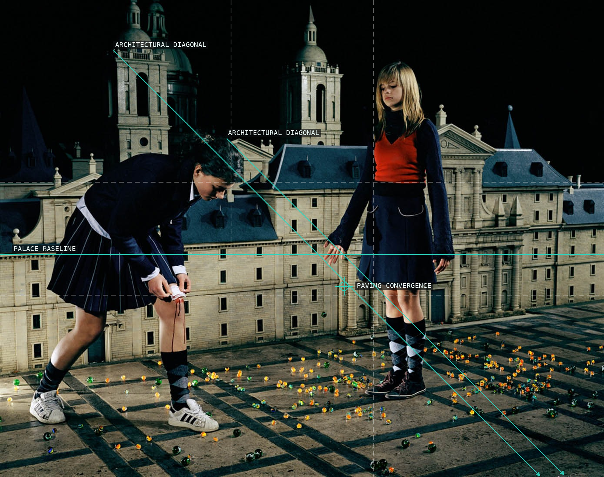
01-marbles
The converging paving makes the oversized girls and marbles occupy a measured miniature court.
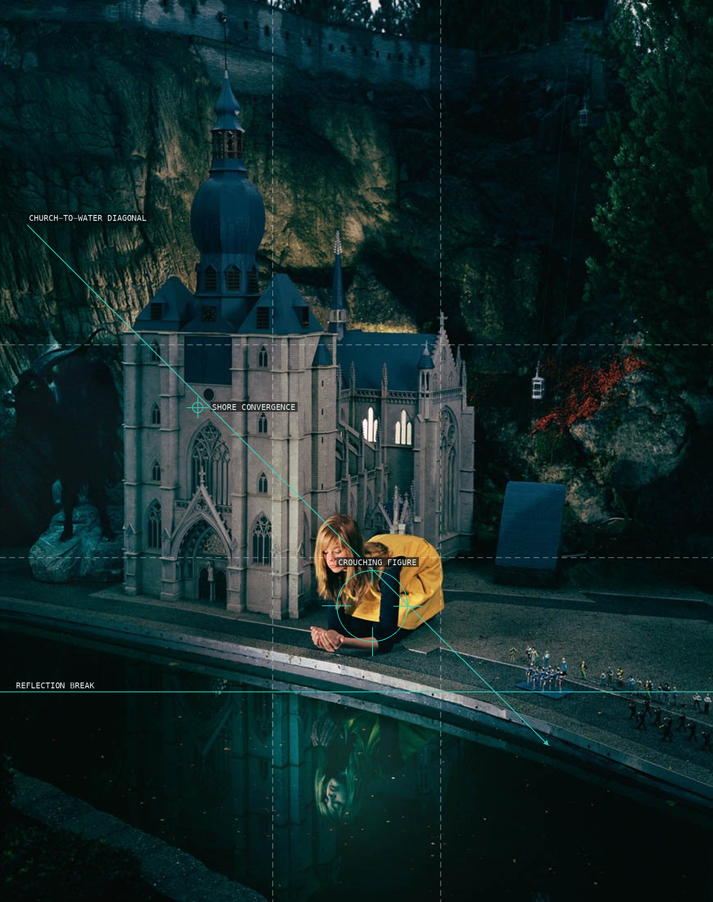
02-reflection-in-water
A low crouching figure and its reflection turn the cathedral model into a vertically divided stage.
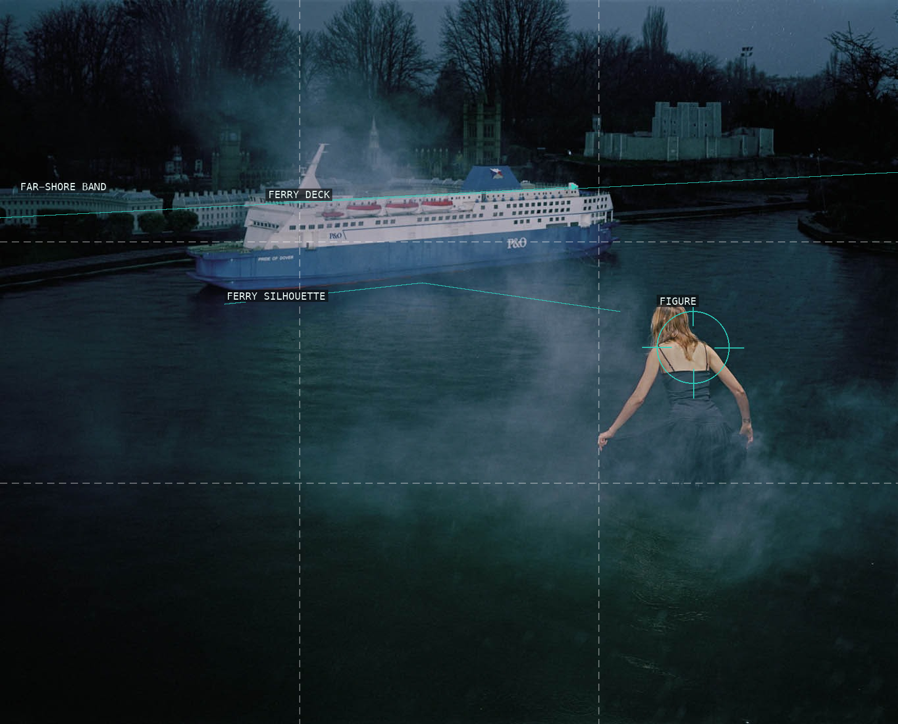
03-po
The ferry holds a horizontal counterweight to the isolated figure in the open water.
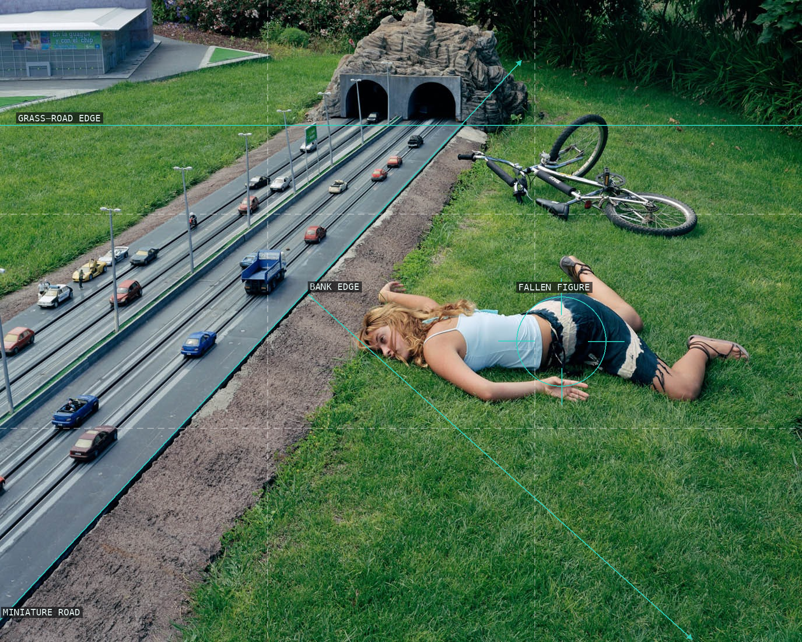
04-bike-accident
The miniature road cuts past the fallen figure and bicycle as if the whole accident were a traffic diagram.
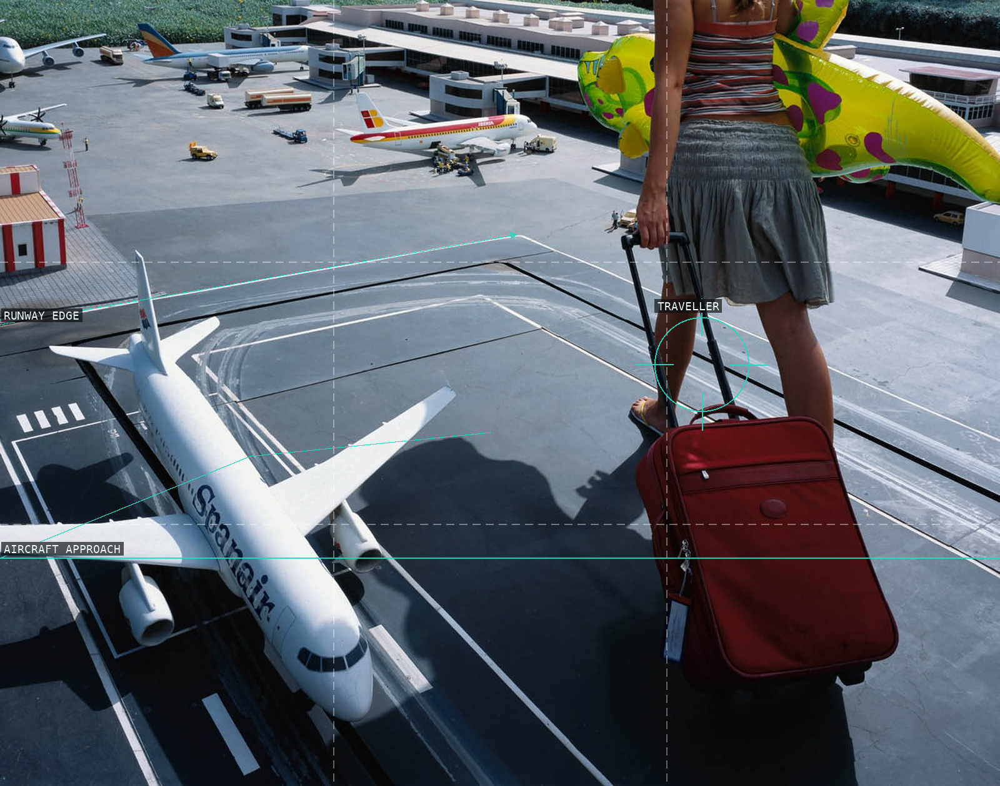
05-airport
Runway markings and a model aircraft make the traveller's cropped body loom over the airport.
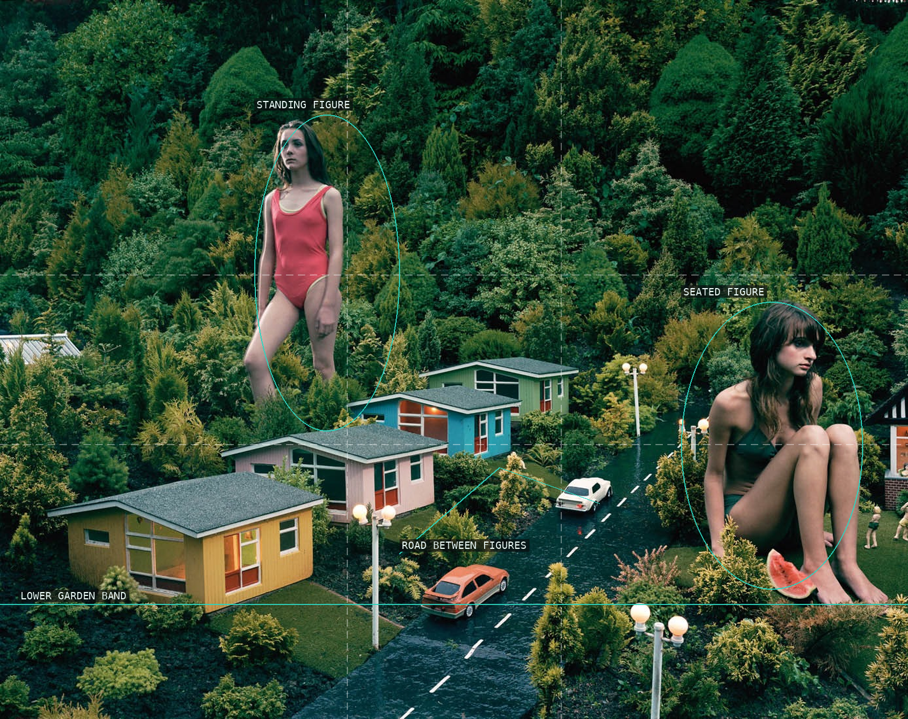
06-beach-houses
The small road steers between competing giant figures and repeatedly scaled houses.
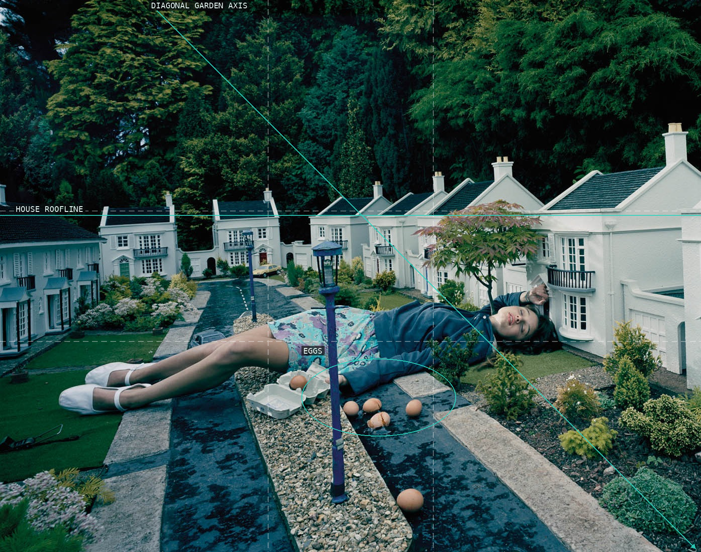
07-broken-eggs
The central path and the reclining body meet at the scattered eggs, a small event enlarged by scale.
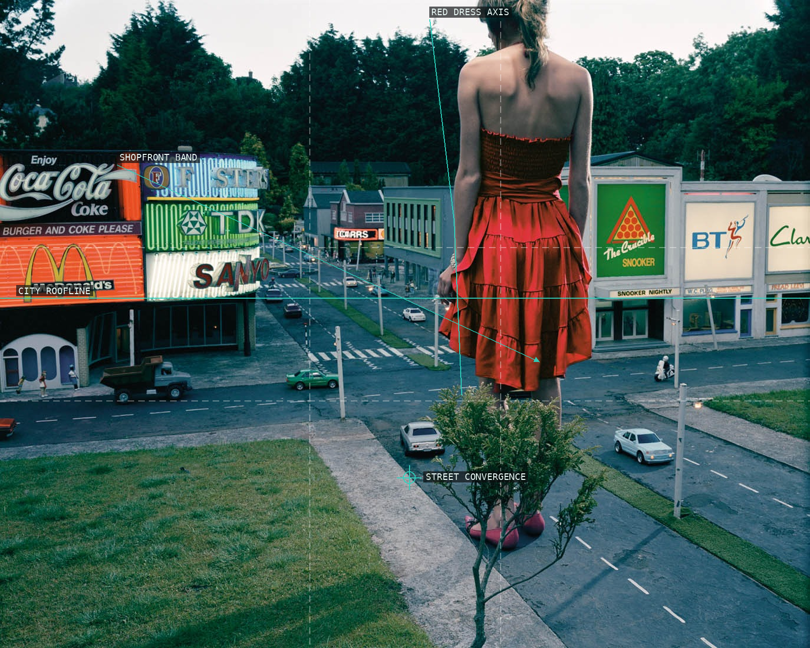
08-red-dress-in-city
The red dress turns the city’s converging signs and streets into a stage viewed from behind.
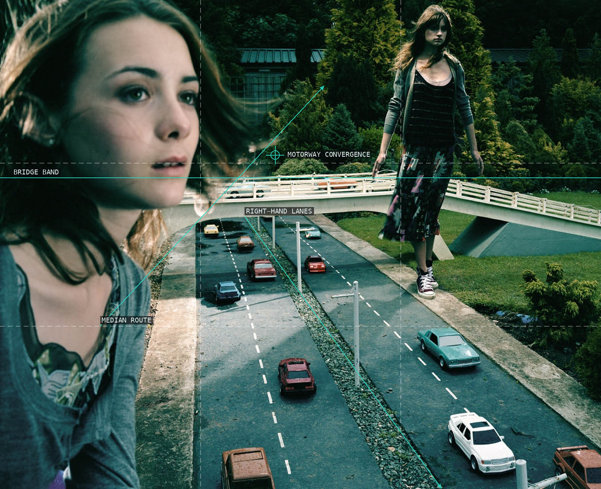
09-girls-by-motorway
Road lanes funnel the eye between a close face and a distant standing figure.
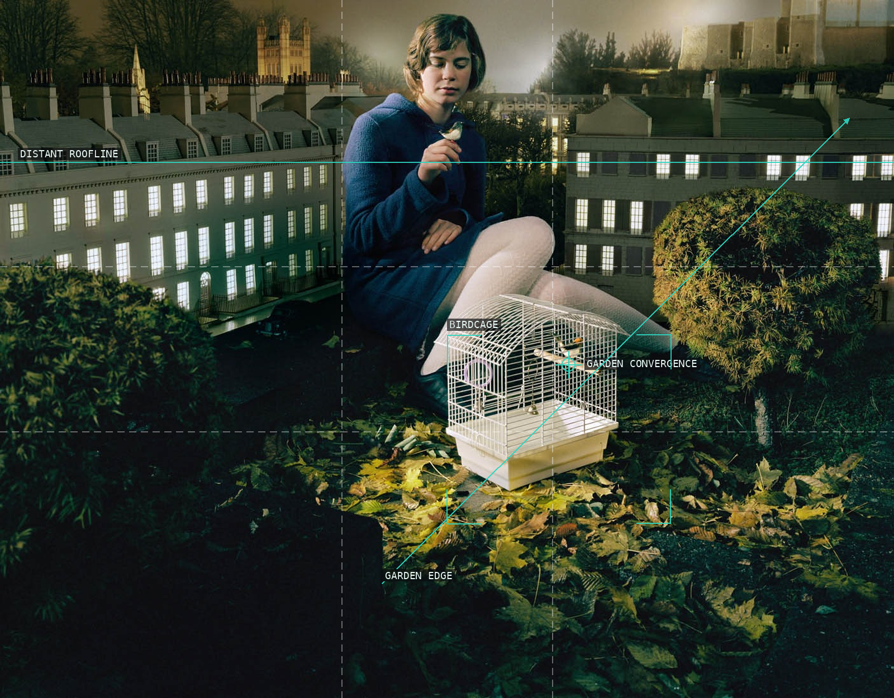
10-birdcage
A small cage occupies the foreground while the seated figure and lit windows compound the nested scale.
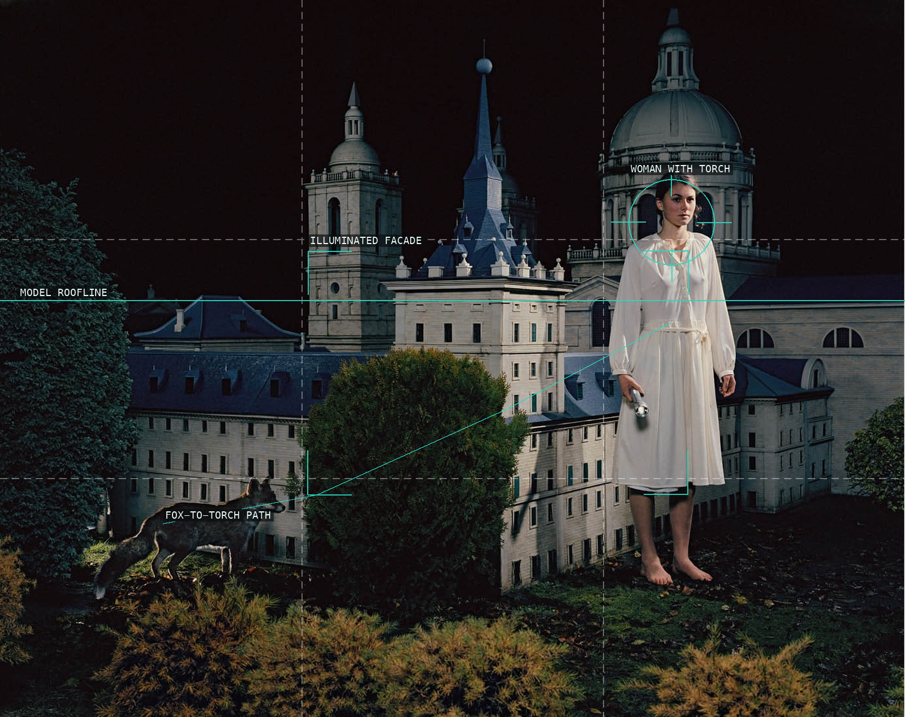
11-torch-with-fox
The fox and torch-holder bracket a dark model town, connected by a deliberately sparse attention path.
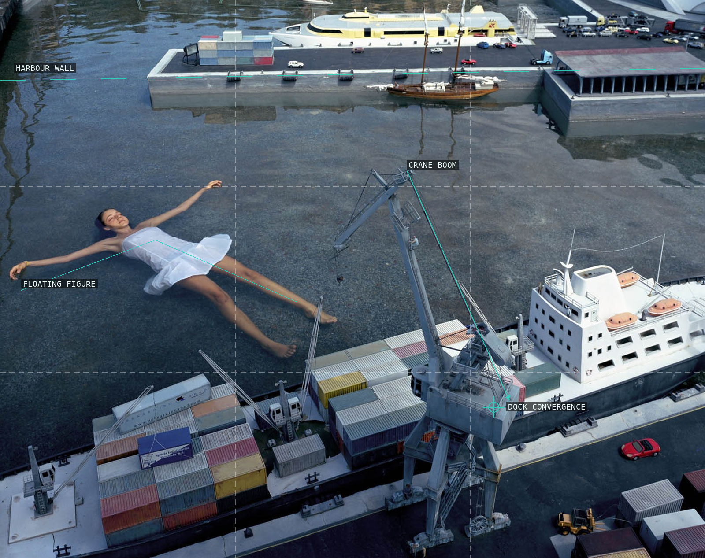
12-floating-in-harbour
The floating figure occupies open water while cranes and docks retain the small harbour's industrial geometry.